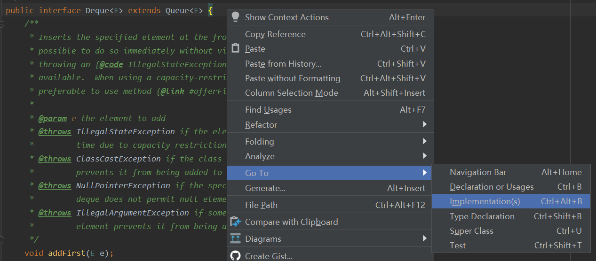
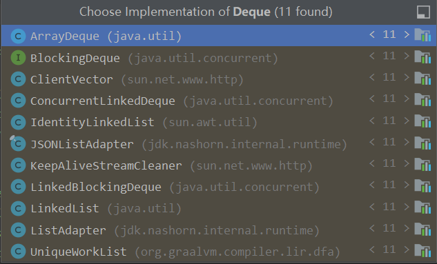
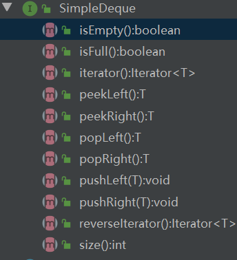
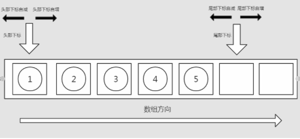

双端队列
双端队列Deque
Java中Deque的实现
查看Java中Deque的实现，打开IDEA或者其他IDE，找到Deque接口(没错在Java中Deque是一个接口)，如下图所示

或者直接快捷键Ctrl+Alt+B

实现类有这么多，虽然这么多常用的就LinkedList、ArrayDeque、ConcurrentLinkDeque、LinkedBlockingDeque这几个。由所属包大概可以猜到前面两个是非线程安全的，后面两个是支持并发，线程安全的。当然事实也是这样的。
Deque的基本性质
Deque这个接口继承自Queue，当然从名称上我们也可以知道，Deque也是一种队列，只不过是一种特殊的队列。除了拥有队列“先进先出(FIFO)”的性质外，还有一些自己的特性:
- 既可以头部入队，也可以尾部入队
- 既可以尾部出队，也可以头部出队
Deque的实现思路
和普通队列一样，Deque也有数组实现和链表实现两种，下面以数组实现为例
Deque接口定义如下：

由上面的接口我们知道Deque有这些方法，

- 队列初始化时head和tail都指向同一个索引为0的数组位置；
- 从左边入队列时head指针不变指向左边入队的元素，tail指针向右移动，指向该元素的下一个位置；
- 从右边入队时左边指正不动，右边指针任然向右移动一位，右边指正永远都是指向右边入队元素的下一个位置；
- 从左边出队时head指针向右移动，指向出队元素的下一个元素，从右边出队时，tail指针向左移动，指向出队元素的原来位置。
属性
由于底层是数组实现所以属性中一定有一个Object数组，还有队列的基本属性
有一个head指针，一个tail指针，一个初始容量capacity，
约束条件
0=< head <= tail，head <= tail <= object.length，因为我们这里是定容量队列。
方法
由于接口我们已经仿照Java中的Deque的接口定义好，所以现在就是方法实现的问题
- isEmpty()，队列是否为空，这个我们并不能用Object数组的容量来判断，因为数组数组一旦初始化容量就确定了，我们可以用head指针和tail指针去确认，当head和tail指向同一个数组位置时，队列也就是空的了。
- size()，队列的大小，这个大小是指队列中已经添加了元素的个数而不是指Object数组的长度。所以size应该有head和tail之间的距离决定，也就是tail-head+1；
-------------本文结束感谢您的阅读-------------